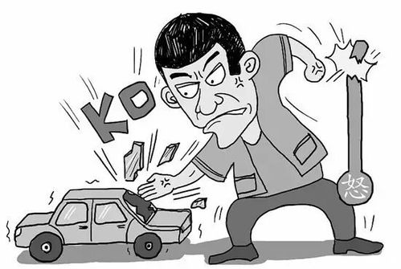
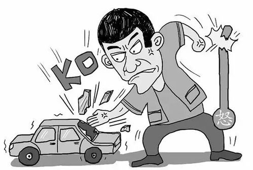

缓解

1、在驾车之前要学会调控自己的情绪,可以通过听音乐来转移自己注意力,尤其是天气比较炎热时,可以适当的喝些柠檬水,同时要保持车内的温度适宜。
2、在上车之前要准备好需要带的相关物品,避免因为丢失物品影响情绪,在开车时避免和车内的朋友讨论或者争辩。
3、同时在开车之前要保证充足的睡眠质量,避免因为过于劳累和犯困影响情绪。要严禁禁止开车减压的方法,上车之前可以多做几次深呼吸,要做好安全防护工作,不要过度疲劳驾驶。

1、在驾车之前要学会调控自己的情绪,可以通过听音乐来转移自己注意力,尤其是天气比较炎热时,可以适当的喝些柠檬水,同时要保持车内的温度适宜。
2、在上车之前要准备好需要带的相关物品,避免因为丢失物品影响情绪,在开车时避免和车内的朋友讨论或者争辩。
3、同时在开车之前要保证充足的睡眠质量,避免因为过于劳累和犯困影响情绪。要严禁禁止开车减压的方法,上车之前可以多做几次深呼吸,要做好安全防护工作,不要过度疲劳驾驶。